에이전트와 함께하는
삶의 전환
목표 오늘 하나만 남기면 됩니다: 오늘 시작했다. 설명이 길어지면 실습이 밀립니다. 시계를 보면서 진행하세요.
첫 마디 “오늘 2시간이 끝나면 여러분은 이미 시작한 사람이 됩니다.”
- 01제 이야기
- 02친구들 이야기
- 03어떻게 가능한가
- 04직접 해보기
- 05이 시대에 필요한 능력
말할 것 목차를 한 줄씩 읽지 마세요. 손으로 훑고 10초 안에 넘기세요.
시간 배분 앞의 60분은 제가 말하고, 뒤의 35분은 수강생이 직접 합니다. 화면에는 안 적었습니다. 말로만 하세요.
전환 “먼저 제 이야기부터 하겠습니다.”
제 하루 이야기
목적 이 20분의 목적은 정보가 아니라 “나도 저렇게 될 수 있다”입니다.
주의 다음 네 장의 점선 칸을 수업 전에 채워두세요. 여기가 비면 오늘 수업이 성립하지 않습니다.
2025년까지, 제 하루
쓰는 법 웃기려고 만든 장이 아니라 웃으면서 공감하게 만드는 장입니다. 따옴표 안의 말을 실제 말투로 읽으세요. 개발자 수강생이 있으면 여기서 웃습니다.
비전공자 배려 직접 겪지 않은 분도 구조는 압니다. “여러분 일에도 이런 말들이 있으시죠?” 한마디면 바로 자기 얘기가 됩니다.
덧붙일 말 본인 하루의 구체적인 장면을 여기 얹어서 말하세요. 무엇을 몇 시간 했는지 숫자가 들어가면 훨씬 셉니다.
핵심 “그리고 다음 날, 또 같은 하루였습니다.” 이 말로 장을 닫으세요. 화면에는 없습니다.
시간 부족, 그리고 높은 스트레스
핵심 두 개가 동등합니다: 시간 부족과 높은 스트레스. 앞 두 줄이 시간, 뒤 두 줄이 스트레스입니다. 하나를 결론처럼 말하지 마세요.
덧붙일 말 시간 쓰는 건 다른 직업보다 자유로운 편이었습니다. 그런데도 충분한 여유는 없었습니다.
마무리 한마디 “그때는 자각하지 못하고 지냈습니다.” 화면에는 없습니다. 말로만 가볍게 붙이세요.
전환 “그게 어떻게 바뀌었는지 말씀드리겠습니다.”
삶의 전환
말할 것 “지금은 세 가지가 동시에 돌아갑니다.” 회사는 그만뒀지만 그에 준하는 프로젝트 하나, 기업 강의 설계와 진행, 고려대 연구실 객원연구원.
강조 표지의 핵심 메시지와 같은 말입니다. 거기서 약속한 걸 여기서 보여줍니다. 숫자를 먼저 말하세요. 하나였던 것이 셋이 됐다는 것. 다음 세 장이 그 셋입니다.
개발 프로젝트 · 모루

- 교사가 수업 외 작업에 쓰는 시간을 줄여 수업에 쓰게
- 흩어져 유실되던 학습 기록이 성장기록으로 남게
- 수업이 중간에 끊기지 않게
쓰는 법 상단 탭 줄을 손으로 짚으세요: 홈·학생 관리·수업 계획·수업 준비·수업 진행·수업 결과·평가. 탭 하나하나가 원래 다른 도구였습니다. 기능 설명은 하지 마세요.
덧붙일 말 “회사는 그만뒀지만 그에 준하는 프로젝트입니다.” 주식회사 곰커넥트와 함께 만들고 있습니다.
핵심 프로젝트 사명 그대로입니다. 교사가 수업 외 작업에 쓰는 시간을 줄여 수업에 쓰게 한다. 도구를 하나로 묶는 건 그걸 위한 방법이지 목표가 아닙니다. 방법은 말하지 마세요.
강의 프로젝트 · JW 데이터 전문가 양성과정
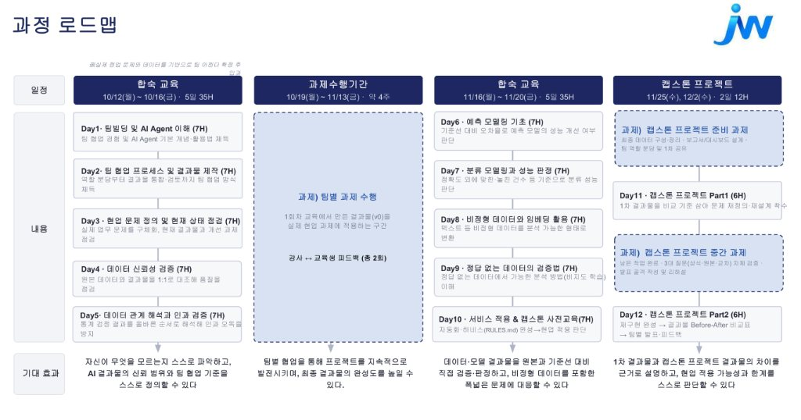
- 에이전트 시대에 맞는 기업 교육 과정을 설계
- 대상은 비개발자 실무자, 지금 2기째
- 도구 사용법이 아니라 일하는 방식을 바꾸는 것
핵심 에이전트 시대에 맞는 교육 과정을 설계한다는 게 이 프로젝트입니다. 회차나 인원 숫자는 수강생에게 아무 의미가 없습니다. 말하지 마세요.
덧붙일 말 “이 과정 교안도 에이전트와 같이 만들었습니다.”
질문이 나오면 12회차 82시간, 9개 팀 25명, 1기 31명 완주, 모듈 90여 개. 규모를 물으면 그때 답하세요. 모듈 색인과 실습 가이드 화면도 따로 있습니다.
연구 프로젝트 · 모의수업 영상 AI 평가
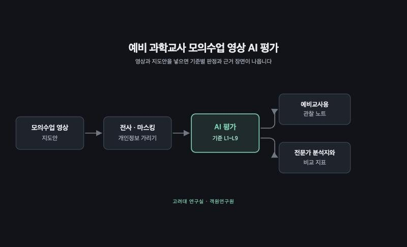
- 사람이 하던 수업 평가를 AI가 할 수 있는지
- 영상을 넣으면 판정과 근거 장면이 나오게
- 에이전트와 교육공학을 접목하는 연구
쓰는 법 연구 내용을 설명하지 마세요. “영상을 넣으면 평가가 나옵니다” 한 줄이면 됩니다.
질문이 나오면 예비 과학교사의 모의수업 영상과 지도안을 넣으면 기준 L1~L9로 판정하고 근거 장면을 함께 냅니다. 고려대 연구실 객원연구원으로 참여 중입니다.
전환 “일이 셋으로 늘었는데, 생활은 어떻게 됐을까요.”
작업의 양은 세 배로 늘었는데,
더 여유로워졌습니다
꼭 말할 것 음악을 만들고, 당근 모임에 나가 노래방·당구·볼링을 하고, 혜란 님과 친구들과 보내는 시간이 늘었습니다.
왜 중요한가 보통 일이 늘면 내 시간이 줄어듭니다. 반대로 갔다는 게 가장 반박하기 어려운 증거입니다.
앞 장과 연결 5번에서 ‘나를 위한 긴 시간 확보가 어려움’이라고 했습니다. 그게 뒤집힌 장면이라고 짚어주세요.
삶의 가속
정리 적은 시간으로 더 많은 결과물. 스트레스는 내려가고 여유는 늘었습니다.
지난 두 달, 제 하루
출처 2026년 9월 21일부터 11월 21일까지, 이 컴퓨터의 실제 기록입니다. 추정이 아닙니다.
11시간 클로드·코덱스·안티그래비티가 돌아간 시간을 겹치지 않게 합치면 685시간, 하루 11.2시간입니다.
4시간 직접 친 메시지 5,840건을 15분 간격으로 묶어 잰 시간입니다. 하루 10번 들어가서 한 번에 23분. 가장 바쁜 시간대에도 한 시간에 14분뿐이었습니다.
40개월 두 달 동안 저장한 작업 5,644건. 경력 개발자 중앙값 연 1,563건(GitClear)으로 나누면 43개월치입니다. 내려 잡아 40개월로 적었습니다. 두 달에 40개월이니 20배입니다.
꼭 할 말 “차이 나는 일곱 시간은 제가 없어도 돌아간 시간입니다. 그 시간에 저는 다른 걸 했습니다.”
반박 대비 작업 건수는 에이전트가 작게 자주 저장해서 부풀려집니다. 물으면 인정하고 ‘그래도 몇 배인 건 분명하다’로 받으세요. 안티그래비티 대화 시간은 기록 구조상 4시간에 빠져 있어 실제로는 조금 더 많습니다.
주의 ‘커밋’, ‘세션’ 같은 말은 쓰지 마세요. ‘작업을 저장한 횟수’로 풀어 말하세요.
미래의 삶을 미리 살고 있습니다
쓰는 법 천천히 읽고 3초 쉬세요.
전환 “저만 그런 게 아닙니다.”
제 친구들 이야기
구조 네 사람이 서로 다른 분야라는 게 이 구간의 메시지입니다. 각자 2분을 넘기지 마세요.
전환 “저만 그런 게 아닙니다. 제 주변에서 일어난 일을 보여드리겠습니다.”
정진화 · 웨인박스 대표
- 분야는 교육용 하드웨어
- 전기도 인터넷도 없는 곳에 교육을 보내는 장비
- 전기 측정과 부하 테스트까지 AI와 함께
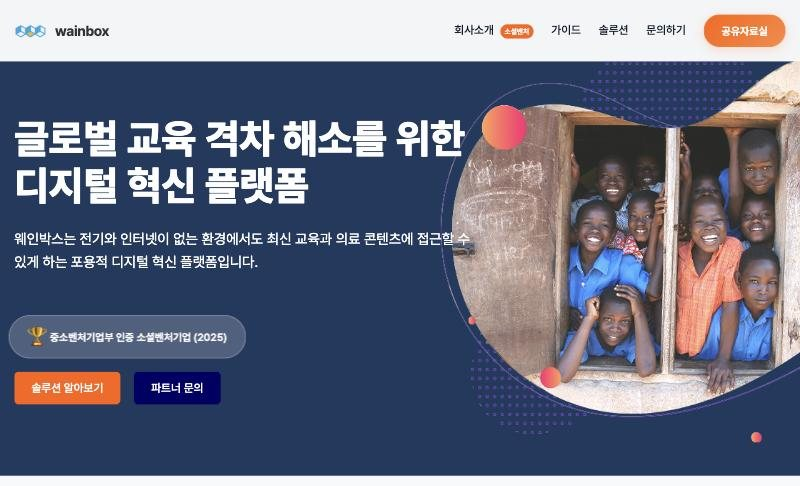
- 40여 개국 · 학생 1만 명
- 학교 200곳 · 150개 소수민족 언어
- 2025년 중소벤처기업부 소셜벤처 인증
본인 말 “전기쪽 측정은 장비가 아니고선 어려웠던 일들을 인공지능과 열심히 풀어낸다.” “나에게는 모든 분야가 생소함에도.”
왜 중요한가 소프트웨어만 되는 줄 아는 분이 많습니다. 하드웨어도 된다는 게 세기가 다릅니다.
덧붙일 것 작년 이맘때 에이전트를 알려드렸고, 올해 모루 프로젝트를 함께 완료했습니다.
안태근 · POD 실용 분야 3위
- 분야는 출판
- 《AI와 함께하는 반셀프 인테리어》
- 책 정보에 ‘AI 활용 제작 도서’ 표기
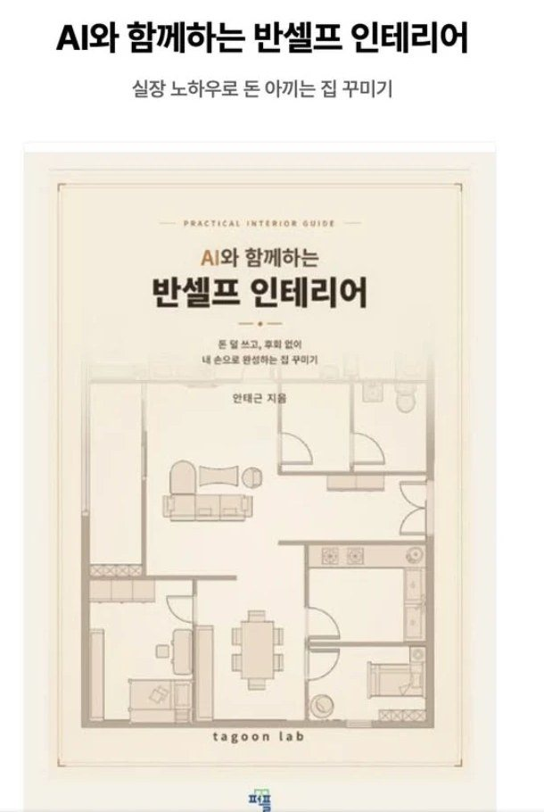
- POD 실용 분야 3위
- 홍보도, 지인 구매도 없이
- 블로그 운영 · 전자책 판매
- 지금은 에이전트 강의 준비
사실 《AI와 함께하는 반셀프 인테리어》, 퍼플, 2026년 10월 10일.
본인 말 “어디에 홍보를 하거나 지인구매도 안했는데… 그래도 조금씩 판매가 되고 있어요.”
오재호 · 나음과이음 대표
- 분야는 디자인
- 홍보용으로 만든 실험적인 3D 웹
- 회사 홈페이지와 운영 업무도 함께
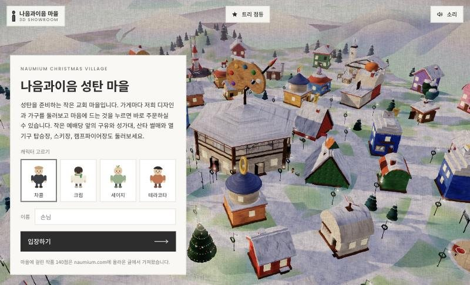
- 들어가서 돌아다니는 성탄 마을
- 트리 점등 · 사물 조작 · 씨앗 심기
- 브라우저만으로 동작
사실 나음과이음은 디자인 회사입니다. 이 3D 마을은 본업이 아니라 홍보용으로 만든 실험적인 서비스입니다.
왜 중요한가 디자인하는 분이 홍보물로 3D 웹을 만들었습니다. 본업 바깥의 일까지 직접 만들어냈다는 게 이 사례의 핵심입니다.
쓰는 법 가능하면 수업 중에 링크를 눌러 실제로 들어가 보여주세요.
김강수 · 남해군수 정책비서관
- 분야는 지역 활동
- 남해에서 달품게스트하우스 운영
- IT 워케이션을 함께 운영
- 남해군수 후보 캠프에서 핵심 역할
- 지원한 후보 당선
- 지금은 남해군수 정책비서관
주의 “에이전트 덕분에 당선됐다”로 들리지 않게. 역할을 했다는 선에서 멈추세요.
배경 원래 남해 지역 활동가입니다. 달품게스트하우스를 운영했고, IT 워케이션도 함께 운영했습니다.
네 사람, 다른 분야
| 이름 | 분야 | 시작 |
|---|---|---|
| 정진화 | 교육용 하드웨어 | 1년 전 |
| 김강수 | 지역 활동 | 1년 전 |
| 안태근 | 출판 | 올해 4월 |
| 오재호 | 디자인 | 올해 4월 |
네 사람 다 비전공자입니다.
핵심 분야가 전부 다르다는 게 이 표의 메시지입니다. “내 분야는 안 될 것 같다”를 여기서 막습니다.
말할 것 “네 분 다 개발자가 아닙니다. 저한테 배운 분들입니다.”
주의 시작 시점은 정확히 짚으세요. 두 분은 작년 11월, 두 분은 올해 4월입니다.
길어야 1년, 짧으면 일곱 달
핵심 이 블록에서 가장 센 숫자입니다. 오래 걸린 일이 아니라는 걸 여기서 박습니다.
전환 “그런데 어떻게 이게 가능할까요.”
요즘 에이전트의
능력
이 구간의 목적 “사람보다 잘하는 일이 이미 있다”를 사례로만 보여줍니다. 설명하지 말고 사실만 말하고 넘어가세요.
담긴 사례 수능 만점, 에르되시 난제 반증, 보안 취약점 발견, ARC-AGI 만점, 암 치료 표적 발견.
주의 하나하나 깊게 들어가지 마세요. 다섯 개를 빠르게 지나가는 게 이 구간의 리듬입니다.
이틀 전 수능: AI가 3분 만에 만점

- 11월 19일 시행, 같은 날 AI에 입력
- 국어 · 수학 · 영어 만점
- 수학 푸는 데 2분 40초
- 28개 모델 중 9개가 네 영역 만점
사실 GPT와 클로드가 국어·수학·영어 전 문항 정답. 챗GPT 2분 40초, 클로드 3분 40초. 28개 모델·설정 중 9개가 국어·수학·영어·한국사 네 영역 만점.
말할 것 “사람은 250분 걸립니다. 3분입니다.”
주의 실험마다 채점 조건이 달라 수치가 조금씩 다릅니다. 숫자를 다투지 마세요.
80년 묵은 수학 난제를 AI가 뒤집었습니다
- 1946년 폴 에르되시가 낸 문제
- 평면에 점 n개를 찍으면 같은 거리가 최대 몇 번 나오나
- 80년 동안 증명도 반증도 안 됐습니다
- 2026년 5월, AI가 반례를 찾았습니다
- 수학자 9명이 검증 논문을 썼습니다
- 이어서 합-곱 추측도 무너졌습니다
문제가 뭔가 점을 여러 개 찍었을 때 ‘똑같은 거리’가 몇 쌍이나 생기는지를 묻습니다. 점 배치를 아무리 영리하게 해도 넘을 수 없는 한계가 있다는 게 에르되시의 추측이었습니다.
얼마나 어려운가 1946년부터 80년간 최고 수학자들이 붙었지만 아무도 못 풀었습니다.
풀면 뭐가 좋은가 이 문제는 조합기하학의 바탕입니다. 하나가 뚫리자 에르되시-세메레디 합-곱 추측과 엘레케시-로니아이 문제가 잇따라 풀렸습니다.
검증 알론, 가워스, 리트, 소윈 등 9명이 함께 검증 논문을 냈습니다. 길 칼라이는 1976년 4색 정리의 컴퓨터 증명에 비견된다고 했습니다.
수학자들이 공동 선언을 냈습니다

- 2026년 6월 라이덴 선언
- 국제수학연맹이 승인
- 서명한 수학자 3,700명 이상
- AI를 금지하자는 게 아니라 규칙을 만들자
왜 넣었나 AI가 수학을 바꾸고 있다는 걸 수학자들이 공식 문서로 인정한 겁니다. 앞 장이 사건이라면 이 장은 그 사건에 대한 학계의 반응입니다.
내용 AI 사용을 밝힐 것, 동료 검증을 지킬 것, 학문의 개방성을 지킬 것. AI 기업이 자료를 가져간 방식도 문제 삼았습니다.
사실 2025년 9월 라이덴대 로렌츠 센터 워크숍에서 시작해 8개월간 다듬었습니다. 테렌스 타오, 페터 숄체가 서명했습니다. 2026년 9월 2일 기준 3,700명 이상.
말할 것 “이 정도로 빨리 바뀌니까 학계가 규칙부터 만들고 있습니다.”
공격자만 알던 취약점을 AI가 먼저 찾았습니다
- 데이터베이스 SQLite의 치명적 결함
- 공격자가 쓰기 전에 구글 AI가 발견
- 해커원 순위 1위도 사람이 아닙니다
사실 구글 빅슬립이 SQLite 취약점 CVE-2025-6965를 찾았습니다. 공격자만 알고 있던 것을 악용되기 전에 막았습니다. 2025년 7월.
해커원 XBOW라는 자율 AI가 2025년 6월 해커원 리더보드 1위에 올랐습니다. 자체 보고 수치라는 점은 붙여 말하세요.
말할 것 “보안은 사람이 제일 잘하는 분야였습니다.”
깃랩 창업자가 자기 암 치료법을 찾았습니다
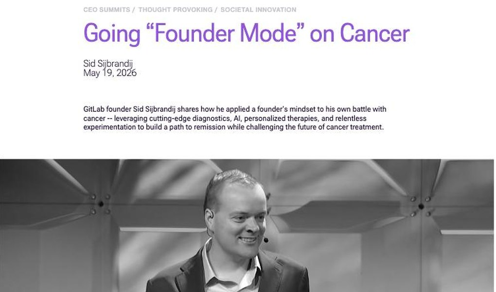
- 희귀암 골육종, 두 차례 재발
- 자기 유전자 데이터를 AI로 분석
- 치료 표적을 찾아 독일에서 치료
- 1년 넘게 무병 상태
사실 깃랩 창업자 시드 시브란디. 2022년 11월 골육종 진단, 2024년과 2025년에 재발. 2025년 4월 독일에서 FAP 방사성리간드 치료와 수술을 받은 뒤 무병 상태입니다. 본인이 2026년 5월 19일에 직접 쓴 글입니다.
AI가 한 일 원시 유전자 데이터에서 치료 표적을 짚어내고, 논문과 임상시험을 찾아 정리하는 일을 했습니다. 치료는 의료진이 했습니다.
주의 “AI가 암을 고쳤다”로 말하지 마세요. 본인도 ‘AI로 질문을 준비해 의사와 상의하라, 혼자 치료하지 마라’고 썼습니다.
말할 것 “돈과 시간이 있어야 가능했습니다. 다만 몇 년 전에는 돈이 있어도 불가능했습니다.”
사람을 넘어선 AGI가 나왔습니다
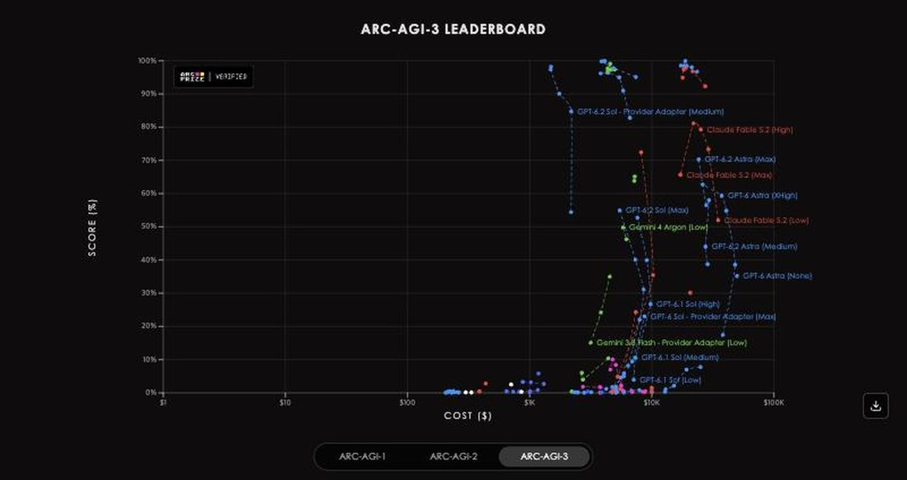
- 사람 수준의 지능을 재려고 만든 시험
- 열 명 중 두 명은 푸는 난이도 — 모두가 푸는 문제가 아닙니다
- 설명 없이 화면만 주고, 뭘 할지 스스로 알아내야 합니다
- 나흘 전 100점 — 사람만큼 효율적으로 전부 해냈습니다
벤치마크란 AI 능력을 재는 공통 시험입니다.
난이도 기준 ARC-AGI-2는 2025년 초 샌디에이고에서 400명 이상을 대상으로 실험해, ‘두 명 이상이 두 번 안에 푼 문제’만 남겼습니다. 쉬운 문제가 아니라 누군가는 풀지만 모두가 풀지는 못하는 난이도입니다.
100점의 뜻 공식 설명은 ‘모든 게임을 사람만큼 효율적으로 깬다’입니다. 맞히기만 하는 게 아니라 비용과 시도 횟수까지 사람 수준이라는 뜻입니다.
3이 다른 점 텍스트 설명이 없습니다. 화면만 보고 목표가 뭔지, 조작법이 뭔지 직접 알아내서 진행해야 합니다.
사실 GPT-6.2 아스트라가 100.0%. 2026년 11월 17일 발표. 비싼 설정 기준입니다.
말할 것 “설명서 없이 처음 보는 게임을 켜서 혼자 깨는 겁니다.”
이제는 사람이 할 수 없던 일을
해내고 있습니다
그럼, 왜 되는 걸까요.
정리 다섯 사례의 공통점입니다. 사람보다 빠른 게 아니라, 사람이 못 하던 일입니다. 수학 난제도 보안 취약점도 암 표적도 사람이 80년, 수십 년을 붙어도 못 하던 것들입니다.
진행 아랫줄을 읽고 바로 다음 장으로 넘어가세요. 여기서 답을 꺼내지 마세요.
AI가 사람을 넘어설 수 있는 이유
이 장의 역할 앞 사례들이 왜 가능했는지에 답하는 자리입니다. 다음 장은 질문이 다릅니다. 거기서는 ‘그럼 나는 뭐가 달라졌나’를 답합니다.
읽은 양 사람이 평생 읽을 수 있는 글의 양을 훨씬 넘겼습니다. 에르되시 반례도 암 표적도 방대한 자료를 다 훑은 결과입니다.
지구력 사람은 지치고 놓칩니다. 에이전트는 같은 집중으로 계속 갑니다.
동시에·전달 비용 사람 열 명이 나눠 하면 회의하고 인수인계하는 데 시간이 더 듭니다. 에이전트는 열 갈래로 동시에 가면서 알아낸 것을 넘기는 비용이 0입니다. 이게 수십 년 묵은 문제를 며칠로 줄인 힘입니다.
주의 “더 똑똑해서”로 설명하지 마세요. 양과 지구력으로 설명하면 비전공자도 바로 납득합니다.
챗봇에서 에이전트로
| 챗봇 | 에이전트 |
|---|---|
| 하는 방법을 글로 알려줍니다 | 제 컴퓨터에서 직접 해놓습니다 |
| 다음 단계를 매번 다시 시켜야 합니다 | 한 번 시키면 끝까지 갑니다 |
| 하나가 끝나야 다음을 시킵니다 | 네다섯 개를 동시에 시킵니다 |
| 제가 알아야 쓸 수 있습니다 | 제가 몰라도 해냅니다 |
진행 네 줄을 한 줄씩 짚으며 읽으세요. 왼쪽 먼저, 오른쪽 나중.
1번 챗봇은 “이렇게 하세요”를 돌려줍니다. 그러면 결국 제가 합니다. 에이전트는 제 컴퓨터에서 직접 해서 결과물을 내놓습니다.
2번 복사해서 옮기는 일이 없습니다. 중간에 안 끼어들어도 됩니다. 쉬는 시간 뒤에 이걸 실제로 보여드립니다.
3번 앞의 둘이 시간을 줄이고, 이게 개수를 늘립니다. 제가 프로젝트 다섯 개를 동시에 굴린 이유가 여기 있습니다.
4번 방법을 아는 쪽은 저쪽입니다. 제가 가진 건 맥락과 판단입니다.
주의 기술 용어로 설명하지 마세요. 이 네 줄이면 충분합니다.
지금 보고 계신 이 슬라이드도
에이전트가 만들었습니다
쓰는 법 여기서 한 박자 쉬세요. 2시간 동안 보고 있던 것이 바로 증거입니다.
일단 무언가
만드는 것부터 시작해봅시다
쓰는 법 설명은 여기서 끝입니다. 더 붙이지 말고 쉬는 시간으로 넘기세요.
핵심 잘 만들 필요 없습니다. 만들어보는 것 자체가 오늘의 목표입니다.
전환 “10분 쉬고, 돌아오면 바로 직접 하시겠습니다.”
쉬는 시간 10분
돌아오면 바로 직접 하십니다.
할 일 코덱스가 안 켜지는 분을 이때 찾아 도와주세요.
컴퓨터 전문가가 하루 종일 옆에서 대기한다면,
뭘 시키시겠어요?
진행 답을 받되 파고들지 마세요. 두세 개만 읽고 넘어갑니다. 오늘 끌어내는 게 목적이 아니라 생각이 시작되게 하는 게 목적입니다.
쓰는 법 질문만 하고 답을 평가하지 마세요. 읽고 듣기만 하면 됩니다.
먼저, 쓰는 법부터
진행 여섯 장을 빠르게 넘기면서 같이 따라 하게 하세요. 설명하지 말고 ‘지금 화면에서 여기를 누르세요’로 진행합니다.
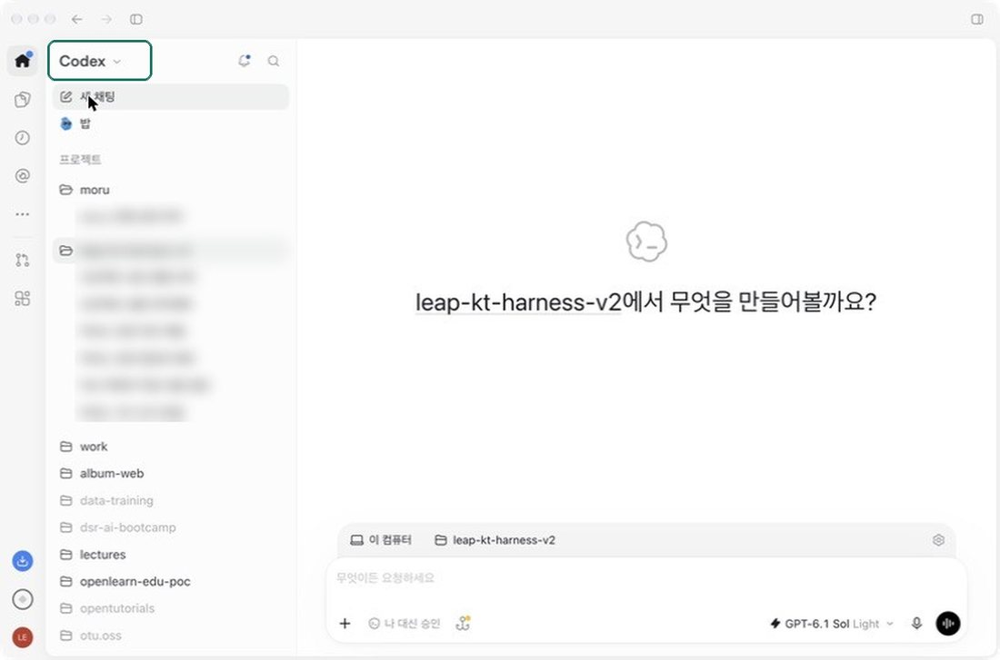
왼쪽 위에서 Codex를 고릅니다
왜 같은 앱 안에 ChatGPT와 Codex 두 가지가 있습니다. ChatGPT는 말로 답하고, Codex가 내 컴퓨터에서 직접 일합니다. 오늘 쓰는 건 Codex입니다.
확인 여기가 ChatGPT로 되어 있으면 아무리 시켜도 파일이 안 만들어집니다. 실습 전에 한 명씩 확인해 주세요.

왼쪽 위 새 채팅을 누릅니다
확인 가운데에 ‘○○에서 무엇을 만들어볼까요?’가 뜨면 준비된 겁니다.
막히는 분 왼쪽에 Codex가 안 보이면 사이드바 맨 위를 눌러 Codex로 바꿉니다.
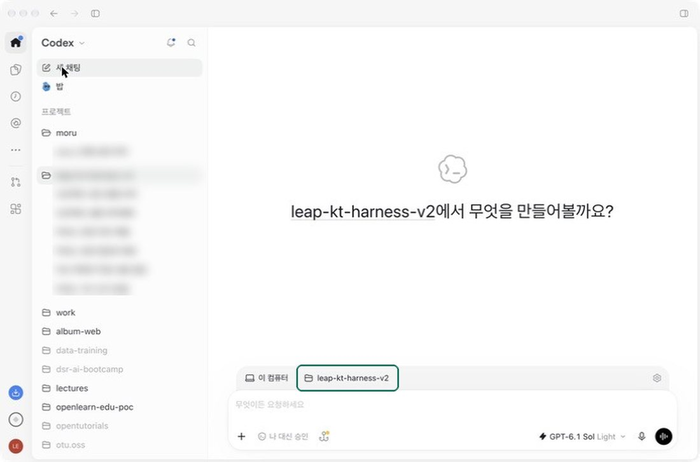
1주차 폴더를 만들고, 그 폴더를 고릅니다
먼저 할 일 바탕화면에 ‘1주차’ 라는 빈 폴더를 하나 만들게 하세요. 그다음 여기를 눌러 그 폴더를 고릅니다.
왜 빈 폴더인가 에이전트는 고른 폴더 안에서 일합니다. 중요한 파일이 든 폴더를 고르면 거기를 건드립니다. 빈 폴더로 시작하면 무슨 일이 있어도 안전합니다.
오늘 결과 오늘 만드는 건 전부 이 폴더에 쌓입니다. 집에 가서 열어보시면 됩니다.
막히는 분 폴더를 못 고르면 옆의 ‘이 컴퓨터’가 눌려 있는지 확인하세요.
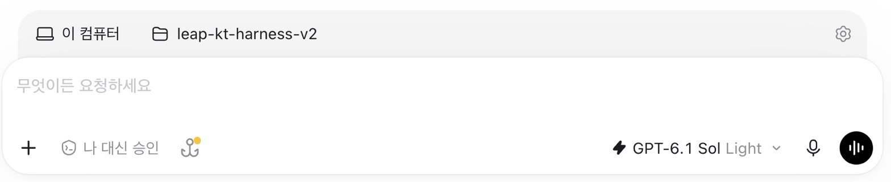
볼 곳은 여기 한 줄뿐입니다
왼쪽부터 이 컴퓨터: 내 컴퓨터에서 일한다는 표시. 그 옆 폴더 이름: 작업할 폴더. 누르면 바꿀 수 있습니다.
아랫줄 + 는 파일 첨부. ‘나 대신 승인’은 켜면 묻지 않고 진행합니다. 오늘은 끄고 쓰시는 게 좋습니다.
주의 모델 이름은 오늘 건드리지 마세요.
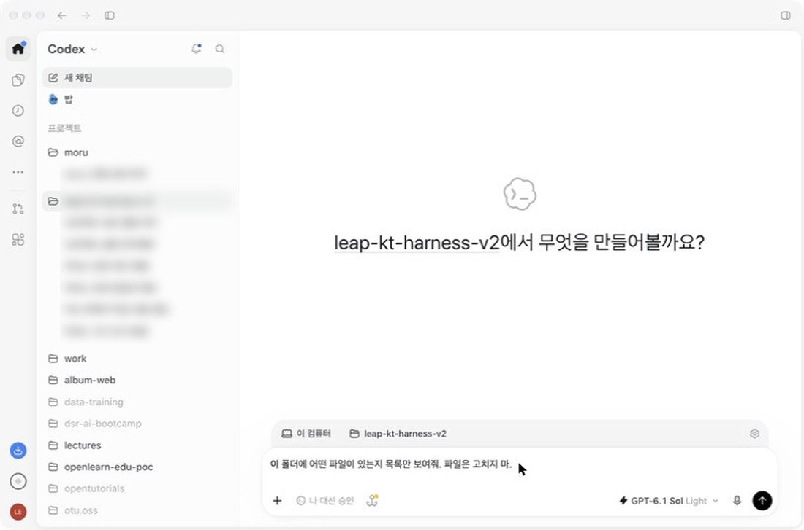
하고 싶은 일을 한국어로 적습니다
보여준 예 ‘이 폴더에 어떤 파일이 있는지 목록만 보여줘.’
핵심 명령어가 아니라 말로 적습니다. 옆 사람에게 부탁하듯 적으면 됩니다.
보내기 엔터 또는 오른쪽 아래 화살표.
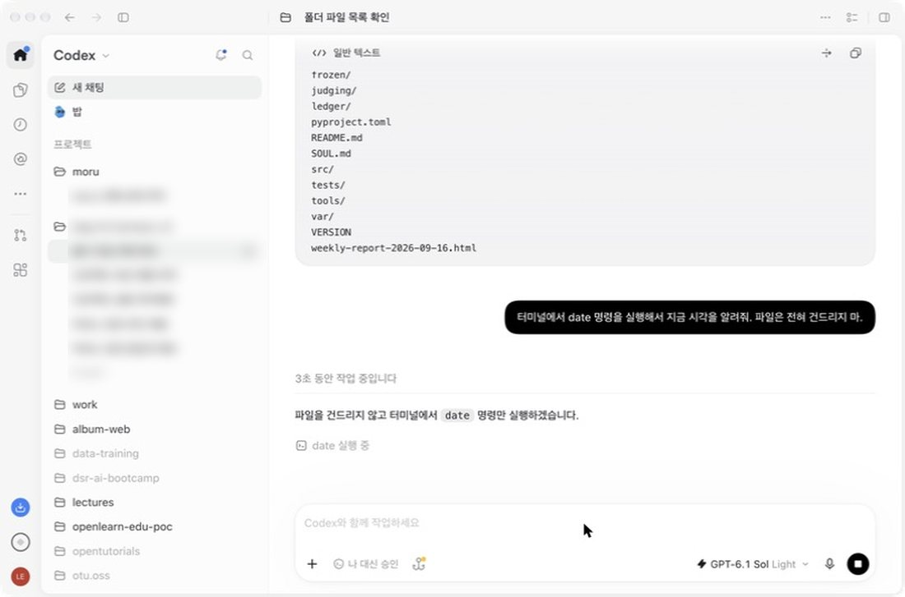
보내고 기다립니다
확인 무엇을 할 건지 먼저 적고, 그다음에 실행합니다. 중간에 끼어들지 마세요.
승인 읽기만 하는 일은 묻지 않고 바로 합니다. 파일을 새로 만들거나 고칠 때 허락을 묻는 창이 뜹니다. 그때 허락을 누르면 계속 갑니다. 오늘 과제에서는 파일을 만드니까 이 창을 보게 됩니다.
쓰는 법 여기서 ‘이 시간에 다른 일을 하셔도 됩니다’를 꼭 말해주세요.
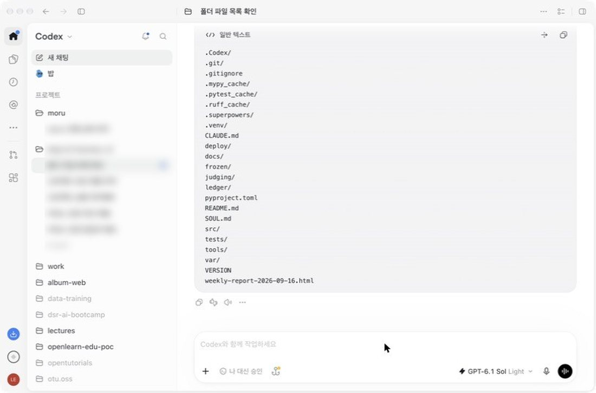
끝나면 결과가 나옵니다
확인 결과를 읽고, 원하던 게 맞는지만 봅니다.
말할 것 “방법을 설명받은 게 아니라, 해놓은 걸 받았습니다.”
부족한 부분을 찾아 계속 고치면 됩니다
충분한 퀄리티의 결과물이 될 때까지 계속 하면 됩니다.
핵심 비전공자가 가장 많이 포기하는 지점입니다. 한 번에 안 되면 틀린 게 아니라 원래 그렇다는 걸 여기서 박아두세요.
말할 것 “한 번에 나오는 경우는 거의 없습니다. 저도 세 번째에 됩니다. 마음에 들 때까지 고쳐달라고 하시면 됩니다.”
예 ‘목록 말고 표로 정리해줘’, ‘한국어로 설명 붙여줘’, ‘글씨를 더 크게’.
지금부터 직접 하시겠습니다
진행 35분. 여기부터 강사는 설명자가 아니라 조교입니다. 말을 줄이세요.
“이 컴퓨터를 쓰는 사람이
어떤 사람인지 소개하는 웹페이지를 만들어줘”
왜 이 과제인가 챗봇은 못 하는 일입니다. 수강생이 아무 정보도 입력하지 않는데 자기 이야기가 돌아옵니다.
안내 공유하기 전에 빼고 싶은 건 빼달라고 말하라고 알려주세요.
대비 새로 산 노트북이라 조사할 게 없는 분께 드릴 대체 지시를 하나 준비해 두세요.
“글씨를 더 크게 해줘”
마음에 안 드는 곳을 본 대로 말하면 됩니다.
핵심 여기가 오늘 실습의 진짜 목적입니다. 한 번 받고 끝나면 챗봇과 같은 느낌입니다. 고쳐달라고 했더니 고쳐질 때 ‘시켰다’는 느낌이 생깁니다.
다른 예 “색을 바꿔줘”, “제목을 ○○로 바꿔줘”, “이 부분은 빼줘”.
안내 전문 용어를 쓸 필요가 없습니다. 눈에 보이는 대로 말하면 됩니다.
“내 컴퓨터 상태를 점검해서
알아보기 쉽게 보고서를 작성해줘”
항목마다 괜찮음 · 지켜볼 것 · 조치 필요로 나눠줘.
전체 프롬프트 “내 컴퓨터 상태를 점검해서 컴퓨터 모르는 사람도 알아볼 수 있게 보고서를 작성해줘. 항목마다 괜찮음·지켜볼 것·조치 필요로 등급을 매겨줘.”
채팅창에 붙여주기 길어서 받아 적기 어렵습니다. 채팅창에 올려주세요.
“다운로드 폴더를 정리하려고 해.
지우지 말고, 먼저 제안만 해줘”
제안을 보고 마음에 들면 그때 옮기라고 하세요.
안전 ‘제안만 해줘’와 ‘지우지 말고’ 두 마디를 꼭 넣게 하세요. 이게 빠지면 지워집니다.
다음 한 줄 “좋아, 그대로 옮겨줘.”
대체 다운로드 폴더가 깨끗한 분은 바탕화면이나 사진 폴더로.
“브라우저에서 바로 되는
숫자 맞히기 게임을 만들어줘”
가위바위보 · 기억력 카드 · 두더지 잡기도 됩니다.
용도 빨리 끝낸 분에게 드리세요. 속도 차이가 흡수됩니다.
덧붙일 한 줄 “색을 더 밝게 해줘”, “점수를 기록해줘”로 한 번 더 고치게 하세요.
방금, 배운 적 없는 일을 해내셨습니다
할 줄 아는 것과 할 수 있는 것이 달라졌습니다.
먼저 물을 것 “방금 무슨 일이 있었나요?” 강사가 요약하지 마세요. 채팅으로 두세 개 받고 이 장을 띄웁니다.
말할 것 “웹페이지를 어떻게 만드는지 아는 분 계셨나요?” 아무도 몰랐는데 모두 만들었습니다. 오늘 2시간의 증거가 이 한 줄입니다.
아랫줄 예전에는 할 줄 아는 만큼만 할 수 있었습니다. 오늘 그 둘이 갈라진 걸 직접 겪으셨습니다.
쓰는 법 윗줄을 천천히 읽고 3초 쉬세요.
전환 “그런데 집에 가시면 막히실 겁니다. 그 얘기를 하고 끝내겠습니다.”
목적을 이루는 건
의지와 방법
한두 번 해보고 그만뒀다면, 방법이 없어서였을까요.
진행 제목을 읽고, 아랫줄을 천천히 읽은 다음 3초 쉬세요. 답을 받지 마세요.
핵심 방법이 없어서 못한 것처럼 보이지만, 두 번 해보고 멈췄다면 애초에 그만큼 하고 싶지 않았던 겁니다. 몰아세우지 말고 묻기만 합니다.
구간 안내 여기서부터 오늘의 마지막 이야기입니다. 정진화 님 사례로 답하고 끝냅니다.
정진화 님 · 이미 끝나 있던 준비
- 에이전트 이전부터 하고 싶던 일
- 개발자와 교수를 찾아다니며 동냥한 기술
- 비개발자가 그렇게 완성한 웨인박스
- 에이전트를 배운 뒤, 하고 싶던 걸 마음껏
이 장의 역할 의지가 먼저였다는 걸 보여주는 실제 사례입니다. 앞에서 소개한 분을 다시 꺼내는 거라 설명이 짧아도 됩니다.
사실 에이전트가 없던 시절부터 사람을 찾아다니며 기술을 얻어 장비를 완성했습니다. 작년에 에이전트를 배운 뒤로는 남을 찾아다닐 필요가 없어졌습니다.
마지막 줄 하고 싶은 게 생기면 바로 만듭니다. 기다리지 않고, 부탁하지 않고, 막히지 않습니다. 이게 이 사례의 끝 그림입니다.
말할 것 “방법이 없어서 못 한 게 아니었습니다. 방법을 구하러 다녔던 겁니다.”
의지가 100%인 사람에게
방법이 생긴 겁니다
핵심 순서가 중요합니다. 에이전트가 의지를 만들어주지 않습니다. 의지가 100%였던 사람의 속도를 바꿀 뿐입니다.
100%로 시작한 사람은 반드시 도달합니다
방법은 에이전트와 함께 찾습니다.
핵심 찾아낼 수 있다는 믿음으로 100% 확신을 가지고 시도하면 도달합니다. 그런 의지를 가진 사람이 결과를 만듭니다.
아랫줄 수강생이 가져야 할 건 방법이 아니라 하겠다는 상태입니다. 방법은 이제 혼자 찾지 않아도 됩니다. 시간과 시행착오를 거치면 찾아냅니다.
말할 것 “저도 세 번째 시도에 된 게 대부분이었습니다.”
쓰는 법 오늘의 마지막 주장입니다. 천천히 읽고 3초 쉬세요.
이번 주에 하실 일
과제 매일 한 번 켜기. 떠오르는 것이 있으면 적어두기. 그게 전부입니다.
주의 과제를 무겁게 주지 마세요. 1주차는 켜는 습관만 만들면 됩니다.
에이전트와 함께하는
삶의 전환을
오늘부터 시작하세요
100%로 시작한 사람은 도달합니다.
마지막 말 “오늘 여러분은 이미 시작한 사람이 됐습니다. 남은 건 멈추지 않는 것입니다.”
쓰는 법 표지와 같은 문장입니다. 2시간 전에 걸어둔 약속을 여기서 닫습니다. 천천히 읽고 끝내세요.
발표자 노트
→ Space 다음 · ← 이전 · N 발표자 노트 · O 목차 · F 전체화면 · 폰에서는 전체가 세로로 펼쳐져 복습용 문서가 됩니다.